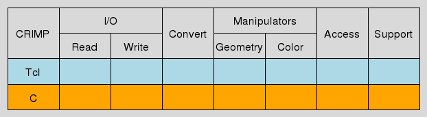

crimp_core - CRIMP - Foundation
This package is the foundation for the whole of CRIMP, the C Raster Image Manipulation Package.
For a basic introduction of the whole CRIMP eco-system please read the CRIMP - Introduction to CRIMP (sic!).
As the foundation its location is in the bottom-most layer of the system's architecture, as shown at
The core provides both C and Tcl level data types and accessors for images, plus rudimentary IO capabilities (conversion to and construction from matrices of numbers, represented by nested Tcl lists).
The following sections first describe the basic concepts of the system, like images and image types, general organization of the command space, etc. After that follows a reference of the Tcl API provided by the core. The C API is not really of interest to users of CRIMP, only to developers wishing to extend the system. As such it is not described here, but in separate manpages targeted at developers and maintainers.
Images are values. This means that they have a string representation. It is however strongly recommended to not access this representation at all, and to only use the accessor commands provided by crimp to obtain the information stored in the internal representation of image values.
The reason behind this is simple: Memory and speed. Images can be large. Generating the string representation from the internal one roughly doubles the memory needed to store it, actually a bit more, due to the necessary quoting of bytes in UTF-8 and list-quting them as well. Furthermore such a conversion takes time, roughly proportional to the size of the image itself, in either direction. Properly accessing the image information without the package's accessor commands requires list commands. This causes the loss of the internal representation, thus forcing later a reconversion to the image's internal represention when it is used as image again. I.e. the shimmering forces us to convert twice.
Therefore, to avoid this, use only the crimp commands to access the images. Even the raw pixel data is accessible in this manner. While access to that in a Tcl script is, IMHO, highly unusual, there are situations where it is beneficial. An example of such a situation are the commands exporting images to raw portable any-maps (PNMs). Our pixel data fits these formats exactly, and with access to it these commands could be written in Tcl instead of requiring C level primitives.
Each image has a type, a string implicitly describing features like the colorspace the image is in, the number of (color) channels, the domain, i.e. bit-depth, of pixel values in the channels, etc.
All type strings have the form crimp::image::foo.
The package currently knows the following types:
RGB also known as Red, Green, and Blue.
4, named "red", "green", and "blue", plus an "alpha" channel controlling pixel opacity.
1 byte/channel (8 bit, values 0-255).
4 bytes.
RGB also known as Red, Green, and Blue.
3, named "red", "green", and "blue".
1 byte/channel (8 bit, values 0-255).
3 bytes.
HSV, also known as Hue, Saturation, and Value.
3, named "hue", "saturation", and "value".
1 byte/channel (8 bit, values 0-255).
3 bytes.
Greyscale.
1, named "luma".
1 byte/channel (8 bit, values 0-255).
1 byte.
Greyscale.
1, named "luma".
2 byte/channel (16 bit, values 0-65,535).
2 bytes.
Greyscale.
1, named "luma".
4 byte/channel (16 bit, values 0-4,294,967,296).
4 bytes.
Binary.
1, named "bw".
1 bit/channel.
1 byte. I.e. 7 bits/channel are wasted.
N.A / Floating Point.
1, named "value".
4 byte/channel.
4 byte.
N.A / Floating Point.
2, named "real", and "imaginary".
4 byte/channel.
8 byte.
Support for the various types varies by operation. The exact image types supported by each operation will be listed in the operation's description. Invoking an operation for a type it doesn't support will generally cause it to throw an error.
All commands operate in a pipeline fashion, taking zero or more image values, zero or more other arguments, and returning zero or more images or other values. None are operating in place, i.e. taking an image variable and writing back to it.
They fall into five categories, namely:

They take one or more images, extract information about them, and return this information as their result. This can be a simple as querying the image's height, to something as complex as counting pixel values for a histogram.
The list of accessors, their syntax, and detailed meaning can be found in section Accessors.
These take an image and transform its contents in some way, leaving the image type unchanged. Examples of commands in category are inversion, gamma conversion, etc. They fall into two sub-categories, manipulation of the image geometry, and of the intensity values or colors.
Similar to manipulators, except that they change the image's type, preserving the content instead. Here reside operations like conversion between the HSV and RGB colorspaces, to greyscale and back, etc.
Another variant of the same theme, i.e. akin to converters and manipulators, yet not the same, these commands read and write images from and to files or other data structures. I.e. they convert between different serializations of image content and type.
The list of I/O commands, their syntax, and detailed meaning can be found in section I/O commands.
Lastly, but not leastly a number of commands, which, while not image commands themselves, support the others.
The core package specified here provides only Accessors and rudimentary I/O commands. All other sections are filled out by the other packages of the CRIMP eco-system.
Any and all functionality of CRIMP, regardless of which package in the system provides it, will be made accessible through a (set of) method(s) of this ensemble command.
In other words, this command serves as the umbrella underneath which anything else is arranged and made available.
This method returns a list containing the names of the channels in the image. The order of channels is the same as expected by the remap method.
The method supports all image types.
This method returns the width and height of the image (in pixels). The result is a 2-element list containing width and height, in this order.
The method supports all image types.
This method returns the geometry of the image (in pixels). The result is a 4-element list containing x-, y-location, width and height, in this order. This is also called the bounding box of the image.
The method supports all image types.
This method returns the height of the image (in pixels).
The method supports all image types.
These methods provide access to the meta data slot of images, treating its contents as a dictionary. As such all the methods provided here have an appropriate counterpart in the methods of Tcl's builtin command dict, with the image's metadata taking the place of the dictionary value or vqariable. The converse is not true, as dict's methods update and with are not supported here.
Please read the documentation of Tcl's dict command for reference.
NOTE that the toplevel key crimp is reserved for use by CRIMP itself.
This method returns the raw pixels of the image as a Tcl ByteArray.
The method supports all image types.
This method returns the type of the image.
The method supports all image types.
This method returns the width of the image (in pixels).
The method supports all image types.
This ensemble command is the umbrella underneath which any and all functionality for reading images from external formats must be placed.
This command is an extension point. I.e., other packages are allowed to extend this ensemble by providing commands of the form ::crimp::read::FOO, where FOO should be the name of the format the command is able to read, or related to it. Note that only commands beginning with a lower-case alphanumerical character, i.e. [a-z0-9] will be exported by the ensemble. This means that it is possible to put private helper commands into the ::crimp::read namespace which will not be visible to the user, by naming them appropriately. However, even so it is recommended to put private commands into a sub-namespace instead, named after the package in question, to reduce the probability of naming conflicts.
The commands used to extend the ensemble are not restricted in their argument signature, although they are expected to return an image.
This package provides only rudimentary import facilities from Tcl data structures, as described next.
This method takes the pixelmatrix, a list of rows, with each row a list of pixel values in the domain [0..255] and returns an image of type grey8 whose height is the number of rows, i.e. the length of the outer list, and whose width is the maximum length found among the inner lists. Rows whose inner list is shorter than the maximum length are padded with black pixels, i.e. a pixel value of 0.
This method takes the pixelmatrix, a list of rows, with each row a list of floating point values for pixel values and returns an image of type float whose height is the number of rows, i.e. the length of the outer list, and whose width is the maximum length found among the inner lists. Rows whose inner list is shorter than the maximum length are padded with a pixel value of 0.
This ensemble command is the umbrella underneath which any and all functionality for writing images to external formats must be placed.
This command is an extension point. I.e., other packages are allowed to extend this ensemble by providing commands of the form ::crimp::write::FOO, where FOO should be the name of the format the command is able to write, or related to it. Note that only commands beginning with a lower-case alphanumerical character, i.e. [a-z0-9] will be exported by the ensemble. This means that it is possible to put private helper commands into the ::crimp::write namespace which will not be visible to the user, by naming them appropriately. However, even so it is recommended to put private commands into a sub-namespace instead, named after the package in question, to reduce the probability of naming conflicts.
The commands used to extend the ensemble are not restricted in their argument signature, although they are expected to take at least an image as argument.
This family of methods extends the basic ::crimp write ensemble. The input image is returned as either a binary string in the specified format, or written to the open channel chan, or the named file at path.
By default the only supported format is tcl, a representation of an image as a nested Tcl list. This format supports, i.e. accepts, images with the types grey8, rga, rgba, and hsv for export.
This family of commands is an extension point. Other packages can extend it to support additional formats by providing commands of the form ::crimp::write::Str_FOO_TYPE and ::crimp::write::Chan_FOO_TYPE where FOO is the name of the format, to specify as the argument format, and TYPE the type of image handled by the command.
Note that the Chan_ form is optional. If this form is missing the system will use the Str_ form to convert the image before writing it to channel or file.
The commands must match the following signatures:
This method takes one or more images and computes the union of their geometries. The result is returned as a bounding box, a list of 4 numbers (x, y, width, and height).
This method takes two bounding boxes (lists of 4 numbers (x, y, width, and height)) and returns their union bounding box.
The C API of the core is of no interest to users of CRIMP, the audience towards which this manpage is geared to.
bounding box, channels, computer vision, dimensions, document processing, geometry, image, image accessors, image type, matrix, photo, vector
Copyright © 2011 Andreas Kupries
Copyright © 2011 Documentation, Andreas Kupries